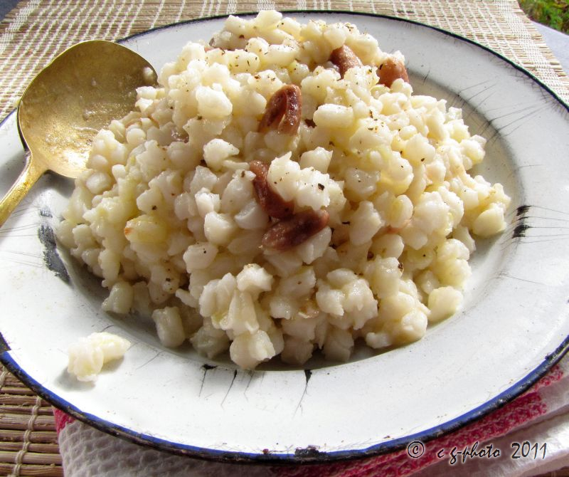
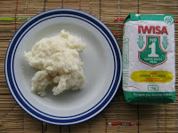

Our Menu
Umngqusho

Umngqusho [umŋǃʱuʃo] is a Bantu dish with several variants: Made of stamp mielies (samp) with sugar beans, butter, onions, potatoes, chillies and lemons, made to simmer. Made of mielie-meal, semolina and peas. A Xhosa variant made with "samp and beans" that is served with butter or fat was apparently Nelson Mandela's favourite dish.[1] Umngqusho recipe in the Congo Cookbook Read more...Umphokoqo

Pap

Pap is a traditional dish that is native to South Africans; the dish is made from softly grounded maize, which is then cooked to the chef’s desired idea of the meal that they have in mind. However grounded maize may be found in other parts of the world as well, and just differs in name. In the West, pap is better known as polenta or grits, and in East Africa it is known as ugali. The word pap is Dutch (similar to South Africa’s Afrikaans language), and simply means “porridge” in English. South African pap is found in most of South Africa’s poorest provinces because it is inexpensive, and it serves as one of the country’s most staple foods. Each ethnic group in South Africa calls pap by a different name; the BaPedi people in Limpopo call it “bogobe”, the Zulu people in KwaZulu Natal call it “phuthu” and the Xhosa people in the Eastern Cape call it “ipapa”. It does not matter what you call pap, what matters is how it is made! In traditional villages, South African pap is cooked outside in a black cast-ion pot, and the fire that it is cooked on gives the pap a good smoky taste. The fire also assists the pap to cook faster than it would on an electric or gas stove. Read more...